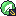

Puño Meteoro
AcerometeorosHUECO 1
Ataque principal: el que mejor farmea.
Tier S en la Sentencia y S en hordas: llega al minuto 30 sobrado. Le castigan Fuego (×2,59), Lucha (×1,32) y Volador (×1,20). Aguanta bien Planta (×0,30), Roca (×0,49) y Veneno (×0,53).
Antes del minuto 30, farmea: el nivel con el que llegas es lo que más alarga la Sentencia. Fusiona Puño Meteoro, Danza Espada, Energibola y Hoja Afilada en el hueco 1 en cada grieta; Ataque Rápido, en su propio hueco, para cuando te rodeen. Con el grupo completo, no entres en más grietas.
Ya llega al tope de velocidad de 130.
Tienda Kecleon: Menta Agitada (apenas cambia lo que aguanta).
Te toca la 1 o la 2 al azar; la oculta, 1 de cada 20.

Evolución (basta con coger la carta una vez): Puño Meteoro → Potencia · Energibola → Síntesis · Hoja Afilada → Reflejos
Evolución (basta con coger la carta una vez): Puño Meteoro → Potencia · Hoja Afilada → Reflejos · Energibola → Síntesis